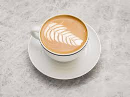

Our Story
Born from a love of community and a passion for exceptional coffee, Cafe began as a dream between two friends: Jerry, a seasoned barista, and Leo, a baker with a flair for turning butter and flour into magic. Together, we set out to create a space where quality meets comfort. Every bean we source is ethically grown, handpicked from small farms in China, and roasted in-house to unlock its boldest, most nuanced flavors.
The Perfect Cup, Your Way
From sunrise espressos to lazy afternoon lattes, our menu is a love letter to coffee lovers. Sip on a velvety Flat White, artfully layered with microfoam, or indulge in our signature "Sigma", a creamy blend of espresso, caramel, and a hint of sea salt. Prefer something cool? Try our Vietnamese Iced Coffee, slow-dripped over sweet condensed milk for a decadent treat. And for non-coffee drinkers, our Spiced Chai Latte and House-Made Lemonade are crowd favorites.
More Than Coffee
We believe in nourishing both body and soul. Our kitchen whips up fresh, locally sourced bites daily—think flaky almond croissants, hearty avocado toast drizzled with chili oil, and gluten-free banana bread that tastes like a hug. Every bite tells a story, thanks to partnerships with nearby farms and artisans who share our commitment to sustainability.
A Space to Belong
Step inside and leave the hustle of the world at the door. Our cozy, sunlit café blends rustic charm with modern comfort: reclaimed wood tables, shelves lined with well-loved books, and a fireplace that crackles in the winter. Need to work? Plug into our free Wi-Fi at the communal table. Meeting a friend? Claim one of our plush armchairs by the window. And for the little ones, we’ve got a snug corner with coloring books and mini muffins.
We Give Back
For us, coffee is a catalyst for good. A portion of every sale supports "World Vision ", ensuring our community grows stronger with every cup. We also host monthly events—open mic nights, latte art workshops, and local artist showcases—because connection is the heart of what we do.
